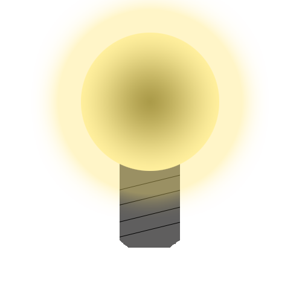

Hjem
Historie
Formler
Quiz

Quiz
Denne side er fyldt med spørgsmål så du kan teste din viden om elektricitet!?
Spørgsmål 1
Hvornår blev elektrisk lys opdaget?
År 1810
År 1820
År 1830
Spørgsmål 2
Hvem opfandt vekselstrøms transformatoren?
H. C. Ørsted
William Stanley
Nikola Tesla
Spørgsmål 3
Hvornår blev stærkstrømsloven vedtaget?
År 1903
År 1907
År 1912
Spørgsmål 4
Hvad er formlen for strømstyrke?
I = t/Q
I = u/t
I = Q/t
Spørgsmål 5
I hvilken by åbnede det første elværk i Danamrk?
: En by!
Spørgsmål 6
Hvad var det at Faraday opdagede efter at have studeret H. C. Ørsteds værk om elektromagnetisme?
Det galvaniske batteri
At Ørsted havde lavet en fejl
Induktion
Spørgsmål 7
Hvad måler man strømstyrke i?
Volt
Ampere
Ohm
Spørgsmål 8
Hvornår blev batteriet opdaget?
År 1765
År 1800
År 1887
Spørgsmål 9
Hvem opfandt glødelampen?
Niels Finsen
Thomas Edinson
Paul Nipkow
Spørgsmål 10
Hvad har transistoren erstattet?
Radiorør
Wolframtråd
Katodestrålerør